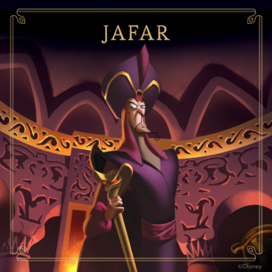
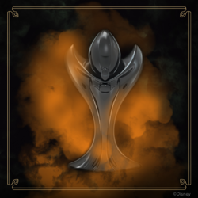
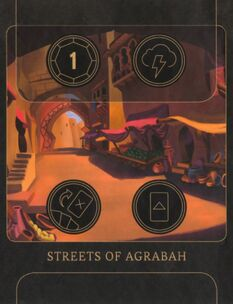
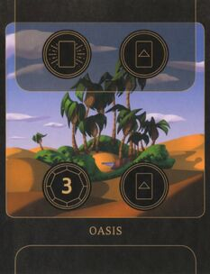
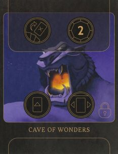

JAFAR
"Finalmente sarete voi che vi inchinerete a me!""


Contenuto in:
The Worst Takes It All (Base)
Provenienza
Aladdin (1992)
Interpretato da (originale):
Jonathan Freeman
Interpretato da (Italia):
Massimo Corvo
Illustrato per il gioco da:
Fabio Perez
OBIETTIVO DI JAFAR
Inizia il tuo turno con la Lampada Magica al Palazzo del Sultano e il Genio sotto il tuo controllo.
Per vincere, Jafar deve sbloccare la Caverna delle Meraviglie, giocando l'Amuleto dello Scarabeo, giocare la Lampada Magica, ipnotizzare il Genio e muovere la Lampada Magica fino al Palazzo del Sultano. Jafar può vincere solo all'inizio del suo turno.
REAME DI JAFAR
Palazzo del Sultano
Parte dell'obiettivo di Jafar consiste
nell'avere la Lampada Magica in questo
luogo.

Giocare una carta
Attivare
Scontro
Fato
Strade di Agrabah

Ottenere 1 Potere
Fato
Scartare carte
Giocare una carta
Oasi

Attivare
Giocare una carta
Ottenere 3 Potere
Giocare una carta
Caverna delle Meraviglie
Bloccato finché non viene giocato l'Amuleto
dello Scarabeo. La Lampada Magica dev'essere
giocata qui, ma solo dopo che la Caverna è
stata sbloccata.

Scartare carte
Ottenere 2 Potere
Giocare una carta
Muovere un Oggetto o un Alleato
MAZZI DI JAFAR
Mazzo Cattivo:
Carta:
Tipo:
Numero di copie:
Sacrificio Necessario
EFFETTO
3
Mazzo Fato:
Carta:
Tipo:
Numero di copie:
Desiderio
OGGETTO
3
STRATEGIE
Strategie per giocare Jafar
- L’obiettivo di Jafar si sviluppa in più fasi, cosa che lo rende uno dei Cattivi con l’esecuzione più lenta. Tuttavia, ha entrambe le azioni Fato disponibili all’inizio della partita per poter rallentare gli avversari e guadagnare tempo.
- Il primo compito di Jafar è trovare l’Amuleto dello Scarabeo, la Lampada Magica e almeno una copia di Ipnotizzare. A meno che non abbiate la fortuna di trovarle subito nella mano iniziale, utilizzate l’azione Scartare Carte ad ogni occasione buona. Scartate qualunque altra carta che non sia uno dei due Oggetti chiave, il Bastone del Serpente, Chiaroveggenza e Iago.
Strategie per contrastare Jafar
- Nonostante l’obiettivo di Jafar si sviluppi lentamente, non per questo bisogna scagliargli il Fato contro al risparmio, a maggior ragione che può diventare inarrestabile in una determinata parte del gioco. Ad ogni fase del suo obiettivo ci può essere una valida strategia per ostacolarlo, quindi avete bisogno di conoscere per bene tutte le carte del suo mazzo Fato.
- All’inizio del gioco, Jafar vorrà raggiungere velocemente i suoi Oggetti chiave, la Lampada e l’Amuleto, per cui giocargli contro la Principessa Jasmine lo costringerà ad avere sempre una possibilità in meno, quando andrà a pescare carte, di trovarli.